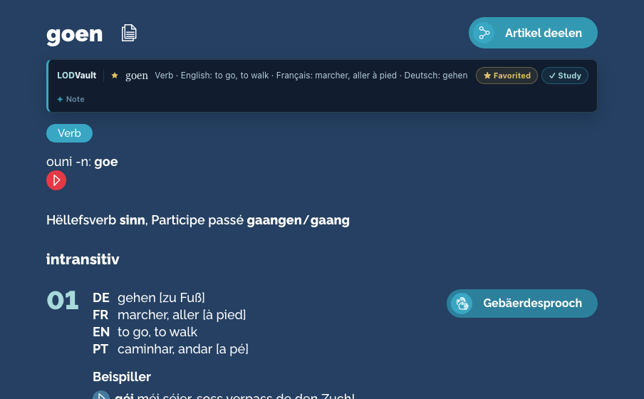

LODVault
Built into the dictionary
Save words where you find them.
Favorite, add to Study, and keep a note directly beneath the original lod.lu entry.

Built into the dictionary
Favorite, add to Study, and keep a note directly beneath the original lod.lu entry.
